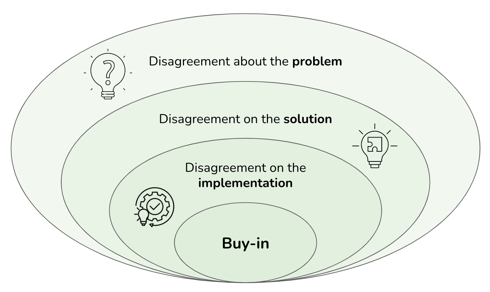
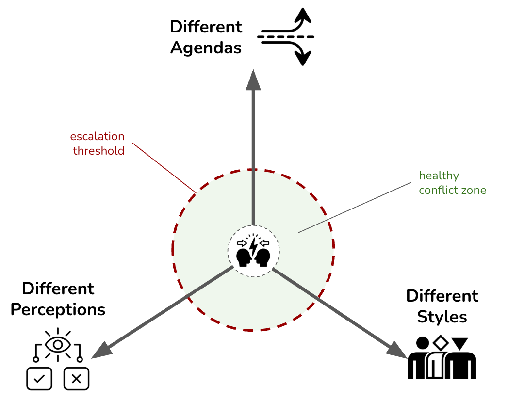

Thinking Like an Architect: Architects as Superglue
IN THIS SECTION, YOU WILL: Understand the view on architects as superglue (people who hold architecture, technical details, business needs, and people together across a large organization or complex projects) and get valuable tips on developing “superglue” abilities.
KEY POINTS:
- Architects in IT organizations should develop as “superglue,” people who hold architecture, technical details, business needs, and people together across a large organization or complex projects.
- Architects need to be technically strong. But their unique strengths should stem from being able to relate technical issues with business and broader issues.
To succeed as an IT architect, you need the skills and the right mindset—a set of attitudes, beliefs, and mental frameworks that shape how you perceive and respond to situations. Regarding their role in organizations, I have found the “superglue” metaphor to be an effective way to put architects into the mindset that sets them up for success and making an impact.
The concept of “superglue” people in IT organizations emphasizes the critical role of those who act as the binding force across various facets of an organization. This idea, championed by Adam Bar-Niv and Amir Shenhav from Intel, and echoed by Tanya Reilly, underscores the need for individuals who excel in more than just technical skills. Gregor Hohpe similarly describes modern architects’ primary role as gluing different organizational functions by riding the Architect Elevator from the penthouse, where the business strategy is set, to the engine room, where engineers implement enabling components, services and systems.
Architects acting as “superglue” should aim to hold together architecture, technical details, business needs, and people within large organizations or complex projects. They should function as the “organizational connective tissue,” with their primary strength being the ability to relate technical issues to broader organizational and business contexts.
Superglue Architects
While technical expertise is indispensable, what should set superglue architects apart from technical specialists is their exceptional relational skills. They must communicate effectively, negotiate, and influence various stakeholders to achieve alignment and drive projects forward. This unique blend of technical and interpersonal skills is the reason for having architects and makes them invaluable in maintaining the organization’s coherence and efficiency.
 Figure 1: Architects serve as superglue, connecting development teams with business stakeholders and linking their teams with internal and external communities.
Figure 1: Architects serve as superglue, connecting development teams with business stakeholders and linking their teams with internal and external communities.
Figure 1 captures the superglue metaphor for architects, showing how they, like superglue, can bond various parts of the organization:
- Developer Whisperers: Architects should work closely with developers, understanding their challenges and ensuring architectural decisions enhance development efficiency and effectiveness.
- Tech-to-Business Translators: They should decode technical jargon into business terms, helping stakeholders grasp the value and implications of technical decisions.
- Cross-Functional Diplomats: By engaging with operations, marketing, and finance, architects can ensure technical solutions are practical, viable, and aligned with organizational strategies.
- Community Connectors: Active engagement within internal communities keeps architects informed and contributes to the collective knowledge pool.
- Industry Influencers: By being visible externally, architects can learn from and influence the broader industry, bringing in fresh perspectives and establishing their organization as a thought leader.
Superglue architects can play a unique and essential role in the smooth operation of large and complex IT organizations. Unlike superheroes who save the day with dramatic rescues, superglue architects ensure continuous, smooth operation by connecting the dots across various organizational aspects.
IT architects should focus on holding everything together, ensuring their organizations’ stability, coherence, and progress. Think of them as the organizational equivalent of duct tape—versatile, indispensable, and always ready to fix the seemingly unfixable.
Superglueing in Action #1: Aligning Organization
Tensions among technology, product, organization, and business functions can slow down progress, lead to poor decisions, introduce complexity, and cause missed opportunities. Acting as superglue, architects can mitigate these issues by fostering better communication and alignment among these elements. The goal is not to create new barriers but to bring these functions closer together, ensuring a cohesive and efficient operation.
The primary value of superglue architects in complex organizations lies in their uncanny ability to align business, product, technology, and organizational functions.
Tensions
Technology, product, organization, and business functions face specific challenges and change at different rates. Ideally, these structures should evolve simultaneously, staying in perfect sync like a well-rehearsed dance troupe. However, reality often resembles a poorly synchronized flash mob, full of tension and missteps, as illustrated in Figure 2.
 Figure 2: The tensions between technology, product, organization, and business functions.
Figure 2: The tensions between technology, product, organization, and business functions.
Tension between technology, product, organization, and business functions can significantly impede progress. Miscommunication or misalignments can turn simple tasks into bureaucratic nightmares. Furthermore, these issues can introduce overwhelming and unnecessary complexity, causing missed opportunities. Here are specific examples of these tensions:
Technology vs. Organization:
-
Example: An organization adopts a monolithic IT system that centralizes all operations, making management efficient. However, development teams are forced to navigate bottlenecks when making changes because all teams are intertwined with a single codebase. This centralization results in a traffic jam of dependencies, slowing down deployments and requiring teams to coordinate their work in overly complex ways.
-
Impact: This structure hinders team autonomy, making rapid iteration and innovation impossible. The teams can’t work in isolation, and a slight change in one area can inadvertently affect another, leading to downtime and delays.
Product vs. Technology:
-
Example: An organization has adopted microservices architecture, where each team owns a service domain, allowing for independent development and deployment. However, the product’s feature requirements are organized differently—for example, by user experience across multiple domains. As a result, a seemingly simple product change—like a new user interface—requires touching various microservices.
-
Impact: This creates a situation where cross-team coordination is mandatory for small product changes, akin to playing “Whac-A-Mole.” Every minor modification may ripple across several teams, increasing complexity and slowing progress.
Business vs. Product:
-
Example: A company’s business strategy frequently shifts between cost-cutting and innovation. At one point, the priority is to reduce operational expenses and hold off on new features. A few months later, the focus shifted toward rapid product innovation and cloud migration to stay competitive. The product teams, meanwhile, are struggling to align their development roadmaps with these conflicting objectives.
-
Impact: This results in conflicting priorities across teams. While the business insists on reducing costs, the product teams are asked to deliver new features and pivot technology platforms, leading to overworked teams and unsustainable project timelines.
Organization vs. Business Functions:
-
Example: The organizational structure is designed around siloed departments, such as IT, marketing, and finance, each with different goals and KPIs. However, the business function requires cross-department collaboration to achieve strategic objectives, such as launching a new product or migrating to the cloud. The departments, with conflicting processes and isolated goals, end up miscommunicating and delaying delivery.
-
Impact: This tension results in project bottlenecks, unclear decision-making, and slow response times as each department operates independently instead of moving toward a shared business objective. The lack of collaboration increases friction and risks missed market opportunities.
When not addressed, these tensions can severely limit an organization’s ability to stay competitive, agile, and responsive to market and technological changes.
Superglue Role in Reducing Tensions
Superglue architects should be able to navigate the wild complexities of modern organizations. They should facilitate that the various architectures—business, product, technology, or organizational design—don’t just coexist but thrive together. Architects’ holistic approach not only reduces tension and misalignment but reassures the organization’s smooth operation, like butter on hot toast.
 Figure 3: Architects should be in the middle of reducing tensions between technology, product, organization, and business functions.
Figure 3: Architects should be in the middle of reducing tensions between technology, product, organization, and business functions.
Acting as superglue, the architects can effectively reduce tensions among technology, product, organization, and business functions. This act includes facilitating critical conversations between these units and ensuring alignment and cohesion. As depicted in Figure 3, the goal of architecture is not to add new constructs between these four elements, but to bring them closer together. By fostering closer relationships and better communication, architects can help these elements work in unison rather than at cross purposes. Here are examples of how architects reduce tensions and ensure these different domains work cohesively:
Aligning Technology with Business Goals:
-
Example: An organization is undergoing a digital transformation, adopting cloud infrastructure to reduce costs and increase scalability. The business wants to shift to cloud services to improve profitability quickly. The architect’s role here is to assess the current technology stack and highlight the potential trade-offs between speed, cost savings, and technical debt.
-
Architect’s Role: The architect ensures that the cloud migration strategy aligns with both business cost-cutting goals and the long-term sustainability of the technology stack. By communicating how aggressive cloud migration might lead to technical debt and future maintenance costs, the architect keeps both business and technology stakeholders aligned, avoiding unrealistic expectations or missed deadlines.
Balancing Product Roadmaps with Organizational Capabilities:
-
Example: A product team wants to roll out new features based on customer feedback. However, the development teams are already stretched thin with existing workloads, and the current organizational design doesn’t support the speed required for this new product push.
-
Architect’s Role: The architect engages the product team and the organizational leadership to ensure the product roadmap is realistic, given the current team structure and workload. They suggest restructuring teams or adopting different DevOps practices to improve delivery speed. By facilitating these conversations, the architect helps product teams avoid bottlenecks and missed deadlines while aligning with the organization’s resource capabilities.
Translating Technical Jargon for Business Stakeholders:
-
Example: The business unit is planning an aggressive cost-cutting strategy to reduce IT expenditures by slashing infrastructure budgets. At the same time, the tech team is preparing for a major system upgrade to improve long-term scalability and security.
-
Architect’s Role: The architect steps in to explain the technical ramifications of cost-cutting to business leaders in non-technical language, such as the risks of underfunding system upgrades or deferring maintenance. They can frame technical debt and potential security vulnerabilities in terms of business risk, making it easier for business leaders to see the bigger picture. This understanding can ensure that critical upgrades are not sacrificed for short-term savings.
Ensuring Product and Technology Co-Evolution:
-
Example: The technology team wants to adopt a new containerized microservices architecture to improve scalability, while the product team is still focused on rolling out features built on an outdated monolithic system. The mismatch creates tension between rapid product releases and long-term technology goals.
-
Architect’s Role: The architect can ensure that both teams’ goals are aligned by creating a phased migration plan. They can propose that the product team start developing new microservices architecture features while maintaining the monolithic system until a complete transition is feasible. This dual track can enable continuous feature delivery without sacrificing long-term technical goals.
Facilitating Critical Conversations Across Teams:
-
Example: An organization’s technology team pushes for agile methodologies to enable rapid development and deployment. At the same time, the business unit still operates on annual planning cycles, making it challenging to sync timelines.
-
Architect’s Role: The architect can organize cross-team workshops to help both sides understand each other’s processes and goals. By explaining how agile practices can enhance product delivery speed and adjust to market needs faster, they can help the business side adjust its planning cycles. This explanation can reduce the friction between long-term planning and agile execution, fostering better alignment between business and technology functions.
Mitigating Conflicting Business Objectives:
-
Example: The business leadership wants to reduce costs and increase product innovation simultaneously, which may place contradictory demands on the IT department. Innovation requires investment in new technologies and R&D, while cost-cutting restricts resources.
-
Architect’s Role: The architect can propose solutions that balance both goals, such as adopting cloud services that can reduce operational costs while offering flexibility for innovation. By integrating the right cloud-native solutions, the architect can ensure the company can innovate without sacrificing budget constraints, thus harmonizing conflicting business objectives.
The “superglue architect” helps navigate these tensions by being deeply involved in the organizational, technical, and product conversations. They bridge the gap between different stakeholders, ensuring smooth collaboration. Their success is measured by the seamless operation of business, product, and technical goals, even when their role becomes less visible over time.
Supergluing In Action #2: Aligning Discussions About Problems, Solutions and Implementations
The Theory of Constraints (TOC), developed by Eliyahu M. Goldratt, is another source of inspiration I used to work as a superglue architect. TOC is a management philosophy focusing on identifying and addressing the most critical bottleneck (constraint) to improve overall performance.
While Goldratt’s work is much broader, the part I find inspiring is his view on resistance to change, which he sees as manifesting in three forms: disagreement about the problem, disagreement on the solution, and disagreement on the implementation (Figure 4). This model is a useful guide to help people resolve disagreements. This model can also be useful in showing that many disagreements stem from people not realizing they are talking about different topics (e.g., trying to decide on low-level technology choices while there is no agreement on which problem they are solving).
 Figure 4: Goldratt’s view on resistance to change: disagreement about the problem, disagreement on the solution, and disagreement on the implementation.
Disagreement about the Problem (What to change?)
Disagreement about the problem occurs when stakeholders or team members perceive the issue differently. In IT architecture and software engineering, this can lead to significant delays and inefficiencies because you might direct resources toward solving a problem that isn’t the root cause of the constraint.
For example, consider an IT team responsible for maintaining an e-commerce platform. The platform is experiencing slow response times, as users have reported. The database team believes the issue lies in inefficient database queries, while the network team thinks the problem is due to network latency. Meanwhile, the backend application developers suspect poorly optimized code. UX designers think that reported slowness is happening on the front end and is a consequence of the poor implementation of the user interface. These teams cannot agree on the primary problem. They may waste time optimizing areas that aren’t the real bottleneck, leading to a patchwork of partial solutions that don’t fully resolve the performance issue.
Disagreement on the Solution (What to change into?)
Once you identify a problem, the next challenge is agreeing on the best solution. This disagreement can stem from different experiences, knowledge, or biases toward particular technologies or methodologies.
In the same e-commerce platform example, the team might disagree on the solution after identifying the database as the root cause of the problem. The database administrators might suggest migrating to a more powerful database server, while the developers propose rewriting the queries more efficiently. UI developers think they should significantly refactor frontend code to a new version of the UI library they wanted to use before but did not have time for the work. The operations team might push for a backend redesign and to scale the entire system horizontally by adding more servers. These conflicting solutions can cause delays as the team debates the best approach, potentially leading to a suboptimal compromise or a solution that introduces new problems.
Disagreement on the Implementation Approach (How to cause the change?)
The implementation can still be contentious even when you agree upon a solution. The implementation phase is critical, as poor execution can negate the benefits of the chosen solution.
Continuing with the e-commerce platform scenario, suppose the team agrees to optimize the database queries as the solution. Disagreements might arise regarding how to implement these changes. The development team might want to rewrite all queries in one go, while the operations team might prefer a phased approach to minimize downtime. Additionally, there might be disagreements about the testing environment, deployment strategies, or even the timeline. If you do not resolve these disagreements, the implementation could be delayed or poorly implemented, leading to new issues such as data integrity problems or complete system outages.
Confusion about the Level of Disagreement
A more difficult-to-spot type of confusion can arise when people are unclear about the level of disagreement they are addressing. This misalignment can be particularly problematic in IT architecture and software engineering, where project complexity often involves multiple layers of decision-making.
People may think they are discussing and disagreeing on one aspect of a project—such as the implementation—when their disagreement stems from a deeper issue, such as not being aligned on the problem itself. This understanding can lead to more productive discussions, efficient use of effort, and decisions that effectively address the core issues.
Example 1: Misalignment on the Problem vs. Implementation
Imagine a software development team optimizing a web application’s performance. The team starts debating how to implement changes—whether to refactor code, adjust server configurations, or optimize the database. However, underlying this discussion is a fundamental misalignment: they disagree on the problem. Some team members believe the issue is with the application code, while others think it’s the database or the server infrastructure, and third think the problem is poor UX design.
As they discuss implementation strategies, they may argue whether to prioritize refactoring code or upgrading hardware, going into a heated debate about low-level technology choices and versions of the libraries they plan to use. But this debate is fruitless because they haven’t first aligned on the problem. The result is that they might implement a solution that doesn’t effectively address the real issue, or they might go in circles without reaching a consensus, leading to delays and frustration.
Example 2: Misalignment on the Solution vs. Problem
Consider a scenario where an IT department is trying to improve the security of its systems. The team is debating whether to implement a new firewall or upgrade its encryption protocols. They might think they disagree on the solution—firewall vs. encryption—but the real issue is that they haven’t agreed on the specific security problem they are trying to solve.
Some team members might be focused on external threats, while others are more concerned about internal data breaches. Because they are not aligned on the problem, their discussion about the solution is confused. One group pushes for a solution that addresses external threats, while another advocates for measures that protect against internal risks. Without recognizing this misalignment, the team risks implementing a solution that only partially addresses the organization’s security needs.
Superglue Role in Resolving Disagreements
As connective tissue, the superglue architect can help resolve disagreements with effective communication, clear documentation, and a collaborative approach to the problem:
-
Clearly Identify and Agree on the Problem: Before discussing solutions or implementation, ensure that everyone has a shared understanding of the problem.
-
Differentiate Between Problem, Solution, and Implementation: Facilitate team members to recognize and articulate their discussion level. This differentiation helps prevent confusion and keeps discussions productive.
-
Facilitate Clear Communication: Use structured methods like root cause analysis or problem statements to align everyone on the problem before discussing potential solutions and implementations.
-
Seeing Multiple Dimensions: As Gregor Hophe elaborated nicely, when architects encounter stalemate situations, they may try to find a new model to demonstrate that everyone is simply looking at the same thing from different perspectives.
By being aware of the potential for confusion and actively working to clarify the level of disagreement, teams ican make more informed decisions, implement effective solutions, and, ultimately, improve project outcomes.
Superglueing in Action #3: Navigating Organizational Conflicts
Conflicts in organizations are inevitable, particularly in complex environments where different teams, priorities, and personalities intersect. IT architects often find themselves in the middle of these tensions, acting as facilitators who help bridge gaps between stakeholders.
 Figure 5: Three common sources of workplace conflict: different agendas, different perceptions, and different personal styles.
Jeff Weiss, a conflict management expert, identifies three common sources of workplace conflict (Figure 5): different agendas, different perceptions, and different personal styles. Understanding these sources can help architects navigate disagreements more effectively.
Managing Conflicts Arising from Different Agendas
Teams within an organization often pursue different yet valid goals. For example, a product team may prioritize new features to gain market advantage, while an engineering team may push for reducing technical debt to improve long-term stability. These conflicting priorities can lead to friction, especially if discussions become a zero-sum game where one team’s success is perceived as another’s loss.
Architects can facilitate discussions that uncover the underlying motivations behind each agenda. For instance, rather than debating whether to prioritize feature delivery or technical refactoring, an architect might propose a phased approach—introducing foundational improvements alongside incremental feature releases. By framing decisions regarding business outcomes, architects can help teams find common ground rather than focusing on competing interests.
Addressing Conflicts Driven by Different Perceptions
Sometimes, conflicts emerge not from fundamental disagreements but from different interpretations of the same situation. A classic example is when a business leader walks away from a meeting, assuming a project will be delivered in three months, while engineers believe they agreed only to an exploratory phase.
To reduce such misunderstandings, architects can improve clarity and alignment. This improvement might involve summarizing key decisions and next steps in a shared document, using structured frameworks like architecture decision records (ADRs) or visual roadmaps. Additionally, they can encourage discussions where each party explains their perspective, helping to surface implicit assumptions before they lead to misalignment. Architecture analytics can further help understand the different perspectives and align them by providing data.
Navigating Conflicts Stemming from Different Personal Styles
Organizational conflicts are not always about goals or facts—sometimes, they stem from differences in how individuals prefer to work. Some professionals thrive in structured environments with strict deadlines, while others prefer flexibility and iterative decision-making. These different styles can lead to friction, particularly in cross-functional teams.
Architects can help by recognizing and adapting to these differences. For example, suppose a detail-oriented technical leader struggles to align with a high-level strategist. In that case, an architect might act as a bridge—translating broad strategic goals into actionable technical plans. Architects can foster understanding when team members have clashing communication styles by facilitating discussions that help each side appreciate the other’s approach.
Superglue Architects as Conflict Resolvers Catalysts
IT architects are not necessarily conflict resolvers, but they often find themselves uniquely positioned to help navigate organizational tensions. Understanding the common sources of conflict—different agendas, perceptions, and styles—can facilitate productive conversations, improve clarity, and help teams work together more effectively. Whether through structured decision-making, improved documentation, or adaptive communication, architects have many ways to resolve conflicts while ensuring alignment between technology and business objectives. Tools such as the culture map can provide useful insights into the different personal styles and preferences within a team, helping architects tailor their approach to each individual.
Superglue Impact: Keeping Everyone in the Same Boat, Upon a Stormy Sea
While architects stay close to the technology, they must ensure it works for the business and customers, not the other way around. By keeping everyone in the loop and aligned, architects help clear the many pitfalls of misalignment and keep the organizational machine running smoothly. Their role is to facilitate communication, ensure alignment, and guide the organization toward cohesive and practical solutions, preventing the myriad risks associated with misalignment.
Misalignment between these elements can introduce several key risks, which superglue architects need to be aware of and can mitigate:
-
Building the Wrong Products: If technology implementation is based on incorrect assumptions, you might create a product that doesn’t meet the actual people needs. Misalignment can lead to producing irrelevant solutions, like trying to sell snow boots in the Sahara.
-
Wrong Prioritization of Activities: Without clear business and product metrics, resources might be directed towards developing “interesting” but non-valuable products. Proper alignment ensures development efforts are focused on initiatives that add real value, not on quirky side projects.
-
Unexpected Delivery Delays: Misalignment can lead to underestimating projects’ complexity, effort, and dependencies, causing significant delays. This misalignment can make a project feel perpetually stuck, like being in a time loop where unforeseen obstacles continuously hinder progress.
-
Duplication of Effort: Without harmonization across business and product strategies, efforts may be duplicated, leading to inefficiencies. This duplication is akin to repeatedly reinventing the wheel, which is wasteful and counterproductive.
-
Building Too Complex Products: Overly complex and configurable systems can be developed to address all possible scenarios, resulting in cumbersome solutions where simpler, more harmonized approaches would suffice. This complexity is like using a Swiss Army knife when only a spoon is needed—overkill and overly complicated.
-
Overengineering: Without pushback to simplify products and a lack of understanding of the technology, overengineering can occur. Imagine using a monster truck for a grocery run—impressive, but entirely unnecessary.
-
Building Too Simple, Unscalable Products: Assuming processes will be simple when, in reality, essential complexity needs to be supported, can lead to fragile and rigid systems.
-
Building Low-Quality Products: Unnecessary complexity and lack of critical knowledge and expertise can lead to low-quality products that fail under pressure, like a dollar-store umbrella in a hurricane. Ensuring quality requires aligning expertise and simplifying designs where possible.
-
Complicated Dependencies Between Teams: Suboptimal organizational design and lack of awareness of system and team dependencies can slow down coordination, creating a bureaucratic nightmare. Efficient team structures and clear communication channels are crucial to maintaining momentum.
-
Creating Fragile, Unsustainable Team Structures: Relying on a small number of developers for critical technologies can make teams extremely vulnerable. Building resilient team structures with adequate support and redundancy is essential.
To Probe Further
- Thinking Like an Architect, by Gregor Hohpe, 2024
- Architects See More Dimensions, by Gregor Hohpe, 2020
- Architects Zoom In and Out, See Different Things, by Gregor Hohpe, 2020
- Architects Look For Causality, by Gregor Hohpe, 2020
- Architects See Shades of Gray, Look for Balance, by Gregor Hohpe, 2020
- Here’s why enterprise IT is so complex, by Gregor Hohpe, 2018
Questions to Consider
Being a superglue architect means constantly developing and redefining your role to benefit a changing organization. Ask yourself the following questions:
- How well do you think you currently embody the characteristics of a “superglue” architect? Which areas could you improve on to become more effective in this role?
- Reflect on your ability to connect the “business wheelhouse” and the “engine room” within your organization. How effectively do you bridge the gap between technical issues and business needs?
- How strong are your relationships with developer teams, local business stakeholders, and broader internal communities? How could you strengthen these connections?
- How much external visibility do you currently have? How could this be enhanced to promote the flow of ideas into and out of the organization?
- Can you identify specific instances of tension between your organization’s technology, product, organization, and business functions? What caused this tension, and how was it addressed?
- How could your current architecture aid in reducing tension between these functions?
- Have you witnessed the architecture sitting on the side, being ignored? If so, what steps can you take to actively involve architecture in decision-making processes?
- Are conversations between the technical, product, organizational, and business functions encouraged and facilitated within your organization? If not, how might they be initiated and supported?
- Considering the three legs of a successful architect (skills, impact, leadership), which are your strongest? Which might need more development?
On Being Architect ← Leadership Traits |
On Being Architect Thinking Like an Architect: Balancing Curiosity, Doubt, Vision, and Skepticism → |